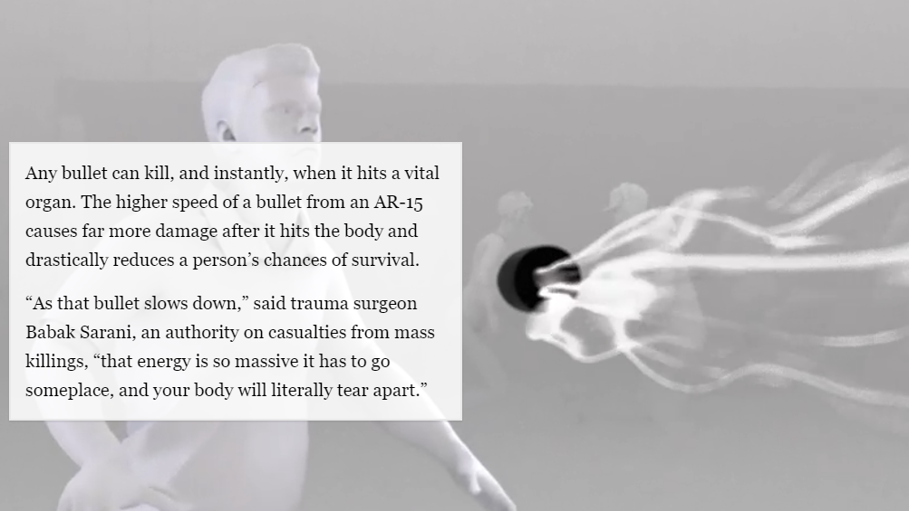

Recommendations
1. Parallax Scrolling
Screenshot - 1
AR-15: The Blast Effect
The Washington Post is a website that cater towards all audiences with a senior audience (age 55-64) demographic being the largest demographic. (Similar Web)
In this example, the visualisation utilises an annotation that appears and travels upwards on screen depending on the user's scroll input. It appears on the left of the visualisation.
Recommendation
Use to increase immersion into the storytelling.
Use to reduce complex data by linearly guiding the user through the data at their own pace
DO NOT use for audiences with motor or cognitive impairments
Requires extensive testing when website performance and cross-compatibility is prioritised
See working example:
2. Animation

Screenshot - 2
Animated sport results
In this example, the visualisation appears into the screen as the teams score a goal. Whilst not directly an annotation, the heading for the current segment follows along the animation, containing implications for actual animated annotation usage.
Recommendation
Use for a younger audience (less than 24 years old)
Use to increase user engagement
DO NOT use for audience with low visual literacy
See working example: